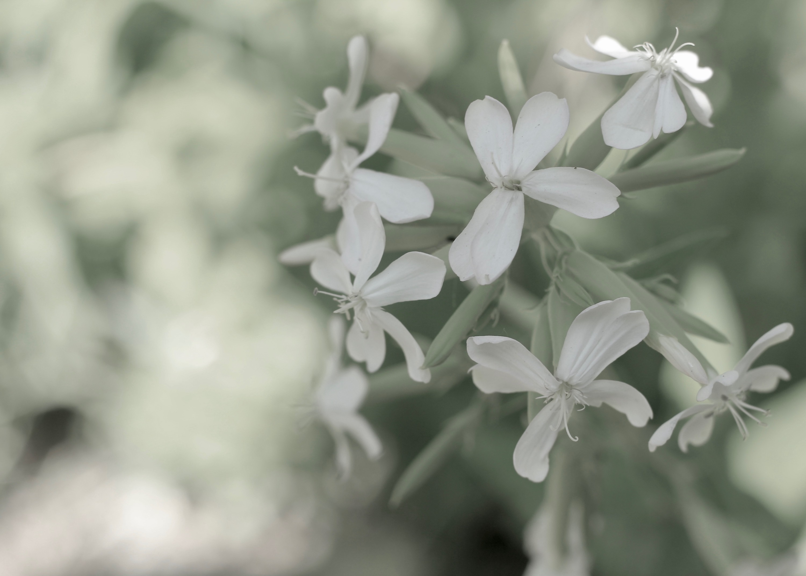
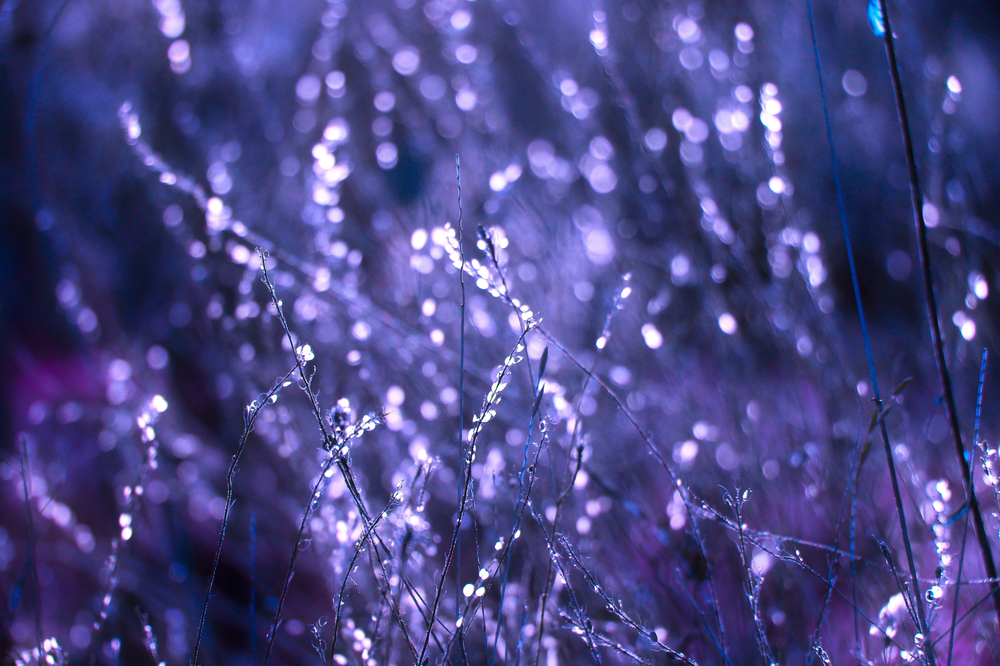

Layered Shadows
Multiple shadow layers create realistic depth that changes on hover.
Shadows, gradients, and filters working together.
Multiple shadow layers create realistic depth that changes on hover.
A subtle gradient on the card background adds dimension without distracting from content.
A grayscale or sepia filter on the image that lifts on hover draws attention to active cards.

This panel uses backdrop-filter to blur and saturate the image behind it. The text stays sharp while the background softens into a frosted surface.
These icons use drop-shadow() instead of box-shadow so the shadow follows the actual shape of each image rather than its bounding box.

This image is being cropped into a specific shape, and will shift when hovered on.

The bottom edge of this image has a linear fade to create a mystical effect.